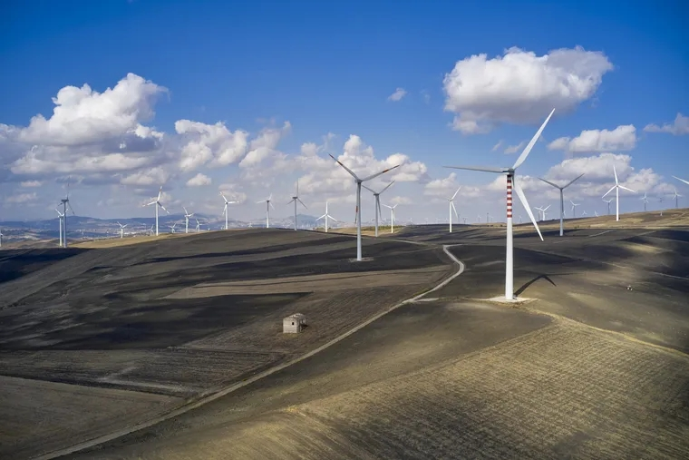

Van en ascenso y son clave en la lucha contra el cambio climático: los 6 datos sobre las energías renovables que debes conocer
La quema de combustibles fósiles libera una gran cantidad de gases de efecto invernadero. Por el contrario, los recursos que se regeneran rápidamente y emiten menos contaminantes pueden ser una fuente de energía limpia y asequible.
FOTOGRAFÍA DE KILIII YÜYAN
POR REDACCIÓN NATIONAL GEOGRAPHIC
PUBLICADO 16 ABR 2024, 15:00 GMT-3
Las energías renovables son un tipo de energías derivadas de fuentes naturales (como la luz solar o el viento) que llegan a reponerse más rápido de lo que pueden consumirse. Esas fuentes abundan y se encuentran en cualquier entorno, define la Organización de las Naciones Unidas (ONU).
A través de su sitio web, el organismo internacional reconoce que el sector energético es, al mismo tiempo, la base en el problema del cambio climático y un factor fundamental para su solución.
Cómo la energía puede hacer frente al cambio climático La producción de energía mediante la quema de combustibles fósiles (como el carbón, el petróleo y el gas) libera una gran cantidad de gases de efecto invernadero (GEI). Esos combustibles, subraya la ONU, son responsables de más del 75 % del total de emisiones de GEI y cerca del 90 % de todas las emisiones de dióxido de carbono (CO₂).
Por el contrario, la generación de energías renovables produce menos emisiones, por lo que la transición hacia su uso “resulta fundamental para abordar la crisis producida por el cambio climático”.
¿Es más costosa? 6 datos sobre la energía renovable Solar, eólica, geotérmica e hidroeléctrica son solo algunos ejemplos de energías renovables. Conoce más datos sobre ellas, a continuación.
Dato 1: todos los países cuentan con fuentes de energías renovables cuyo potencial todavía no se ha aprovechado por completo, reconoce la Organización de las Naciones Unidas.
Dato 2: actualmente, las energías renovables representan la opción más asequible en la mayor parte del mundo, afirma la ONU. Según la entidad, los precios en tecnología para este sector van en disminución. “El coste de la electricidad proveniente de la energía solar cayó alrededor del 85 % entre los años 2010 y 2020 y los costes relacionados con la eólica con ubicaciones en tierra y en altamar bajaron cerca de un 56 % y un 48 %, respectivamente”.
Dato 3: en 2030, la electricidad generada a través de fuentes renovables podría aportar el 65 % de todo el suministro a escala mundial. El porcentaje podría escalar al 90 % para el año 2050, lo que supondría un recorte masivo de las emisiones de carbono y ayudaría a mitigar los efectos del cambio climático, según la Agencia Internacional de Energías Renovables (IRENA, por sus siglas en inglés).

Dato 4: el acceso a energía asequible, segura, sostenible y moderna, que
se traduce en la posibilidad de cocinar con combustibles no
contaminantes, mejorará la salud y el bienestar de las personas. Las
renovables contribuirán a proteger a la población de riesgos
medioambientales y sociales como la contaminación atmosférica, asegura
la Organización Mundial de la Salud (OMS).
Según los cálculos de 2019 de la agencia sanitaria de las Naciones
Unidas, cada año 3.2 millones de personas mueren prematuramente a causa
de la contaminación del aire en espacios cerrados generada por el uso de
combustibles y tecnologías contaminantes para cocinar.
Dato 5: si bien es cierto que la transición hacia emisiones netas cero conducirá a la pérdida de 5 millones de puestos laborales en el sector de la producción de combustibles fósiles, se estima que se generarán 14 millones de nuevos empleos en el suministro de energía para 2030. En efecto, se produciría una ganancia neta de 9 millones de puestos de trabajo.
Dato 6: muchos países necesitarán ayuda financiera y técnica para llevar
a cabo la transición. Sin embargo, las inversiones en energías
renovables tendrán su compensación, confirma la organización
internacional. “Solo la reducción en contaminación y en el impacto
negativo sobre el clima podría llegar a ahorrar al mundo hasta 4.2
trillones de dólares estadounidenses cada año en el año 2030”.
Las energías renovables son el único camino creíble si el mundo quiere
evitar una catástrofe climática, sostuvo el Secretario General de la
ONU, António Guterres, durante la Asamblea de la Agencia Internacional
de Energías Renovables en 2023.
"Solo las energías renovables pueden salvaguardar nuestro futuro, cerrar
la brecha de acceso a la energía, estabilizar los precios y garantizar
la seguridad energética", concluyó.